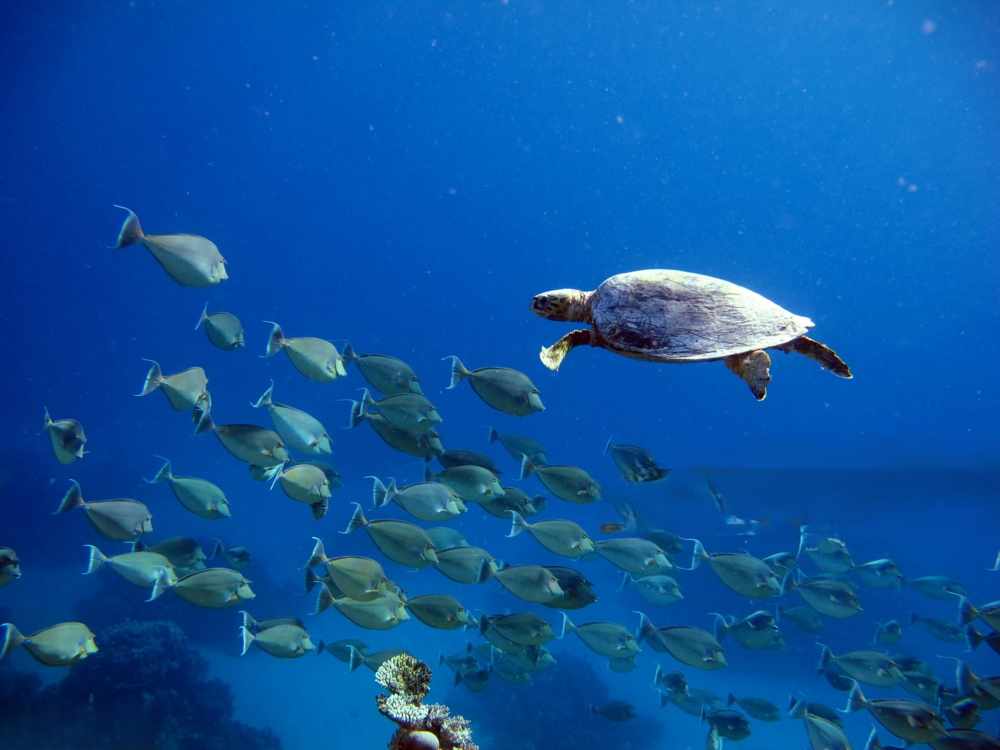
Marine creatures are animals that live in oceans, seas, and other saltwater environments. They include a wide range of species, from tiny plankton and colorful coral to massive whales and fierce sharks. Some, like fish, use gills to breathe underwater, while others, like sea turtles and dolphins, surface for air. Marine life plays a crucial role in maintaining ocean ecosystems, contributing to biodiversity and the planet’s health.
Marine mammals are warm-blooded animals that rely on the ocean for survival. They have adapted to life in water while retaining characteristics of land mammals, such as breathing air, having live births, and nursing their young with milk.
Marine mammals can be classified into four different sub groups. cetaceans (whales, dolphins, and porpoises), pinnipeds (seals, sea lions, and walruses), sirenians (manatees and dugongs) and marine fissipeds (polar bears and sea otters).
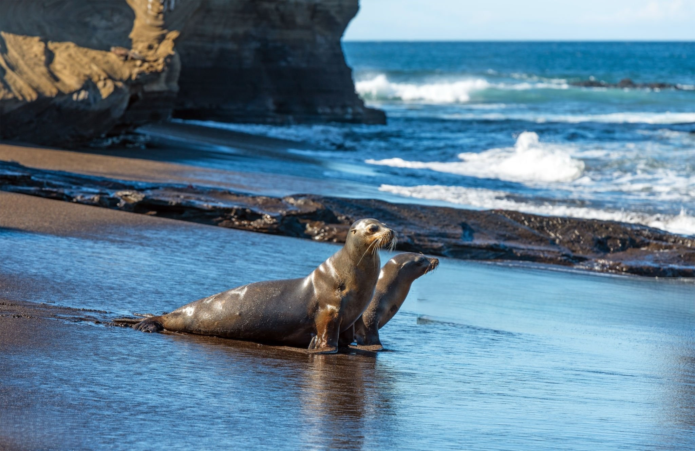
Fish are one of the most diverse groups of animals in the ocean, with over 20,000 species found in various shapes, sizes, and colors. They inhabit a wide range of environments, from shallow coastal waters to deep ocean floors. Notable species include whale sharks, tuna, salmon, and anglerfish, each playing a key role in marine ecosystems.
Fish are essential to the food web, serving as both predators and prey. Some species, like the Atlantic salmon, migrate between freshwater and saltwater, while others, like tuna, are fast swimmers. Fish are also a vital source of food for humans, though many species are threatened by overfishing, habitat destruction, and climate change.
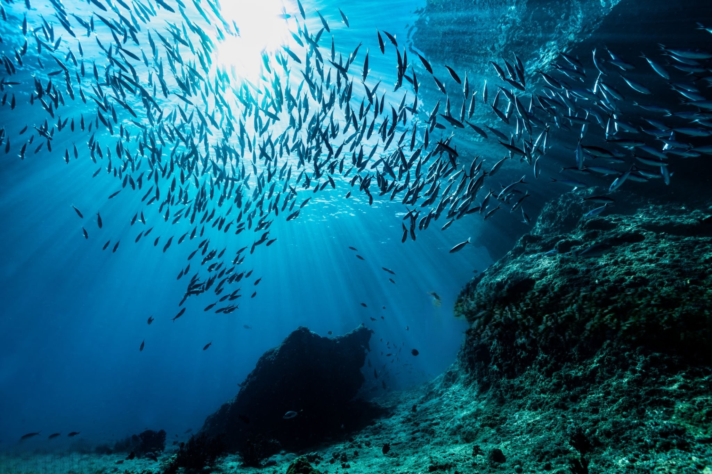
Sea turtles, sea snakes, saltwater crocodiles, and marine iguanas are include in this group. These reptiles are vital parts of their ecosystems, with some species, like sea turtles, playing essential roles in maintaining healthy seagrass beds and coral reefs. However, many marine reptiles face threats from habitat loss, poaching, and climate change, making conservation efforts crucial for their survival.
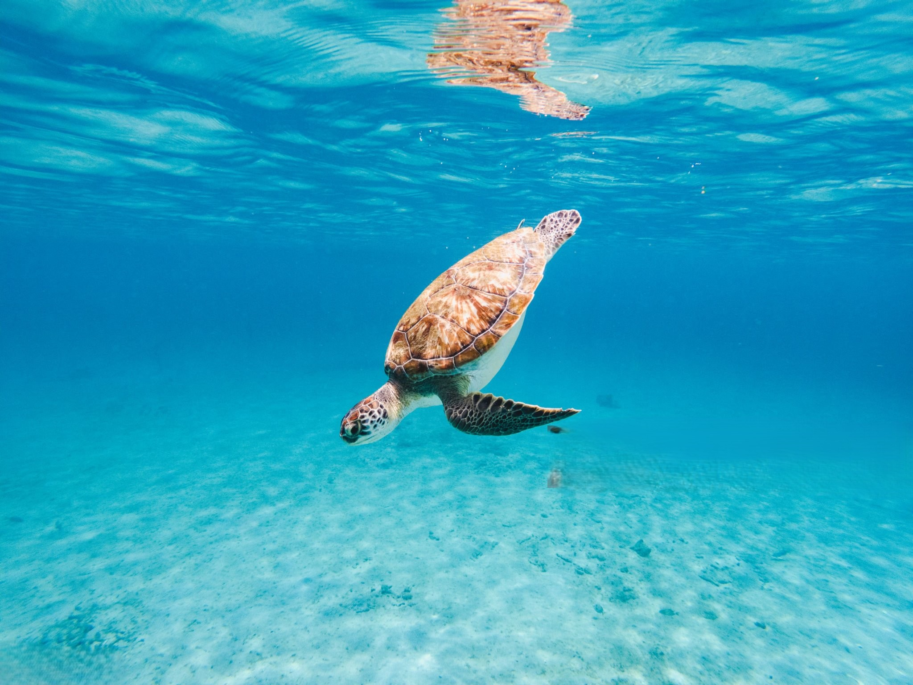
Crustaceans are an incredibly diverse group of invertebrates found in marine environments, characterized by their hard exoskeletons and jointed legs. They play a crucial role in the food web and come in many shapes and sizes.Crustaceans re a wildly diverse group of invertebrate animals such as shrimp, krill, crabs, and lobsters.
Crustaceans are integral to marine ecosystems, contributing to the balance of the food chain. They act as both predators and prey and help break down organic material. Their diverse forms and behaviors make them an essential part of oceanic biodiversity. However, they face challenges from overfishing, habitat destruction, and climate change, which affect their populations.
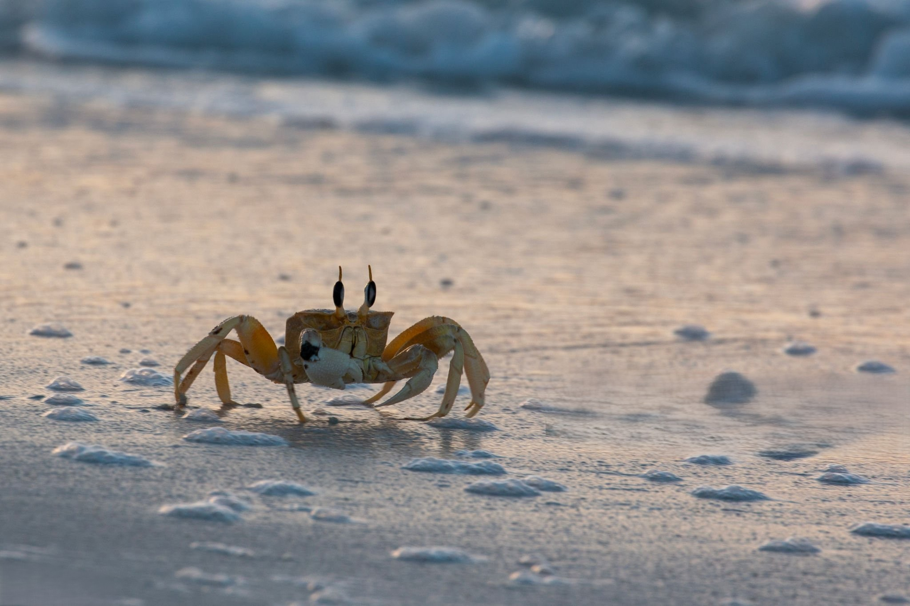
Mollusks are a highly diverse group of invertebrates found in marine and freshwater environments. With over 100,000 species, they play an essential role in aquatic ecosystems. Those mollusks can be classified in three different categories. Gastropods (snails and slugs), cephalopods(squids and octopuses) and bivalves (clams, oysters, and mussels).
Mollusks are ecologically important in several ways. They serve as food for many marine animals and humans and help maintain the balance of ecosystems by filtering water and contributing to nutrient cycling. However, overfishing, habitat loss, and climate change, particularly ocean acidification, are threatening their populations and biodiversity.
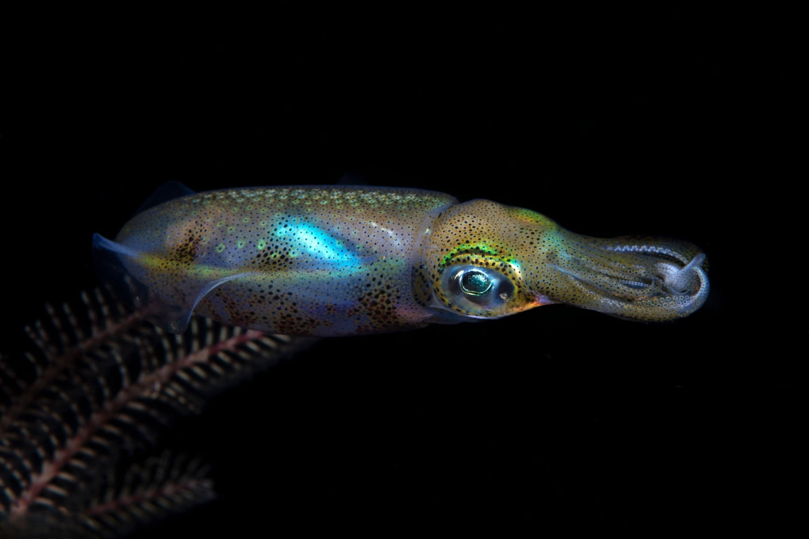
Marine creatures inhabbit different marine environments. Those habitats mainly can be divided into coastal and open ocean habitats. Coastal habitats are found in the area that extends from as far as the tide comes in on the shoreline, out to the edge of the continental shelf. Most marine life is found in coastal habitats, even though the shelf area occupies only seven percent of the total ocean area. Open ocean habitats are found in the deep ocean beyond the edge of the continental shelf.
| Coastal Habitat Marine Creatures | Open Ocean Habitat Marine Creatures |
|---|---|
| Fish: Clownfish, Seahorse, Goby Fish, Parrotfish | Fish: Tuna, Swordfish, Mahi-Mahi |
| Mammals: Sea Otters, Manatees | Mammals: Dolphins, Whales (Blue Whale, Sperm Whale) |
| Crustaceans: Crabs, Lobsters | Sharks: Great White Shark, Hammerhead Shark |
| Mollusks: Octopus, Mussels, Oysters | Jellyfish: Portuguese Man o' War, Moon Jellyfish |
| Reptiles: Green Sea Turtle | Squid: Giant Squid |
|
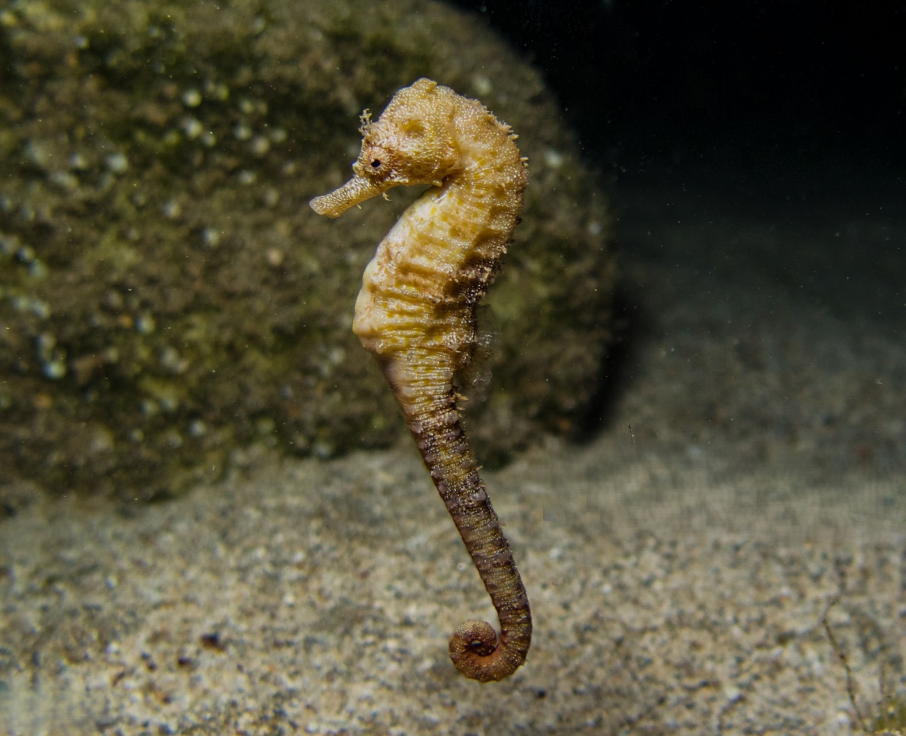 |
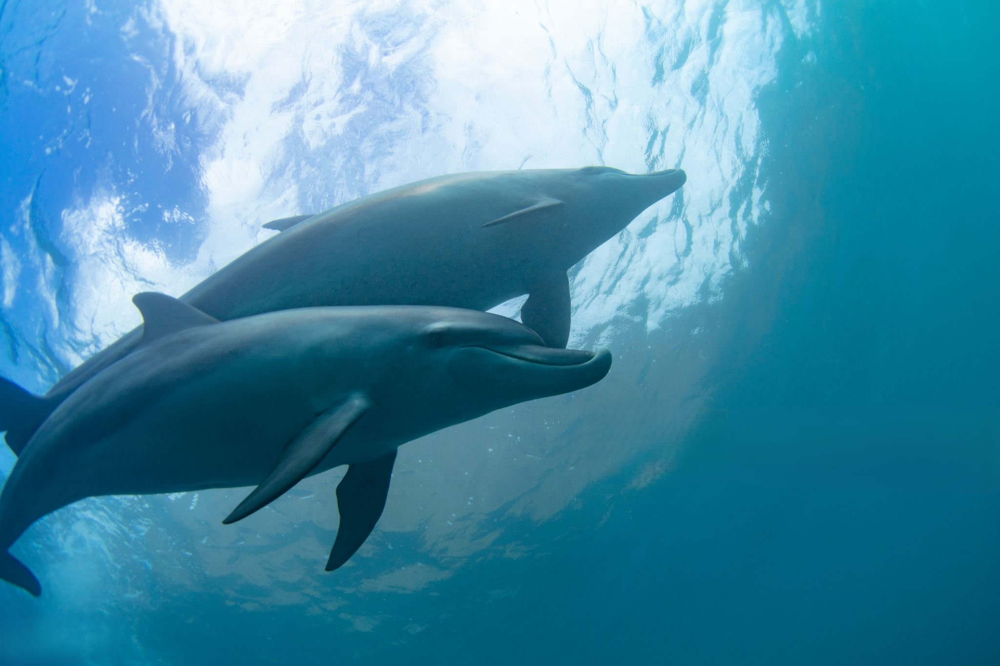 |
Each habitat presents unique challenges, influencing the physical and behavioral adaptations of the organisms living there.
Whales help the ocean and the climate in two ways. First, they help just by being whales and doing whale things! They feed in the deep then return to the surface to breathe and poop. Their “fecal plumes” bring nitrogen and iron to the surface, which fertilize phytoplankton and make them more productive. Scientists call this the “whale pump,” and it’s also responsible for enhancing fisheries. Secondly, whales are huge. As the ocean’s largest citizens, they eat a ton of organic matter (carbon), which gets converted into body mass. When they die, whales sink to the ocean floor, and all the carbon stored in their tissues gets transferred to the deep, where it remains – sequestered for centuries.
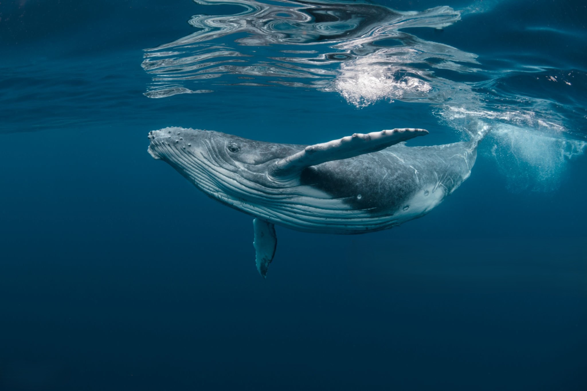
Sea otters have very little blubber; so, they eat constantly to keep up their energy and warmth. Their favorite foods are sea urchins, and they eat so many that they keep the invertebrates’ population in check. Without otters, urchin populations spike, and the herbivores mow down kelp. Other animals that rely on kelp for habitat and food are left scrounging, and the planet has fewer plants to help sequester carbon. Otters also eat crabs. In seagrass ecosystems, the lack of crabs allows snails and slugs to proliferate.
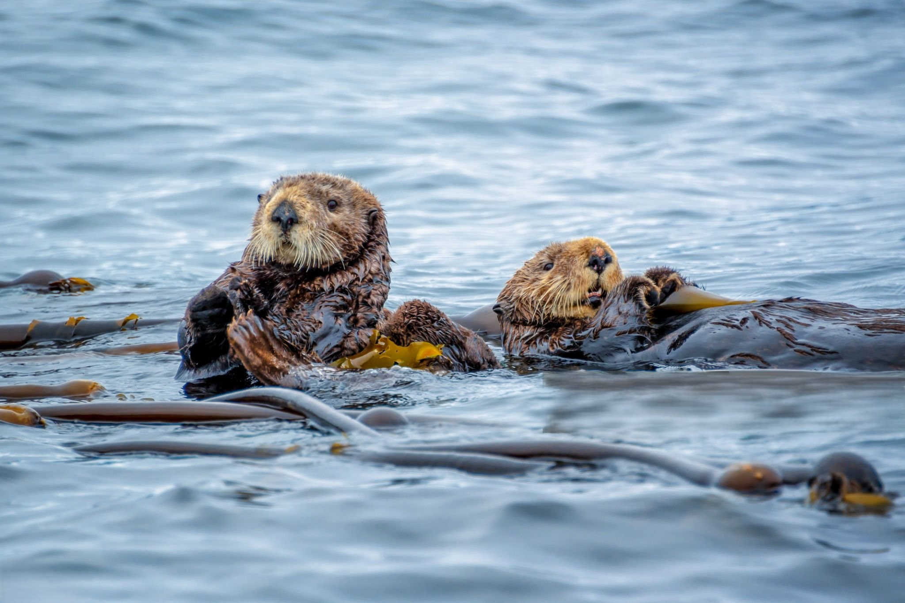
These jelly-like creatures rise to the sea surface at night to suck up and eat phytoplankton. During the day, salps sink deeper in the sea – possibly to avoid predators. There, they poop in the deep, and their carbon-rich pellets sink rapidly – sequestering that carbon on the seafloor.
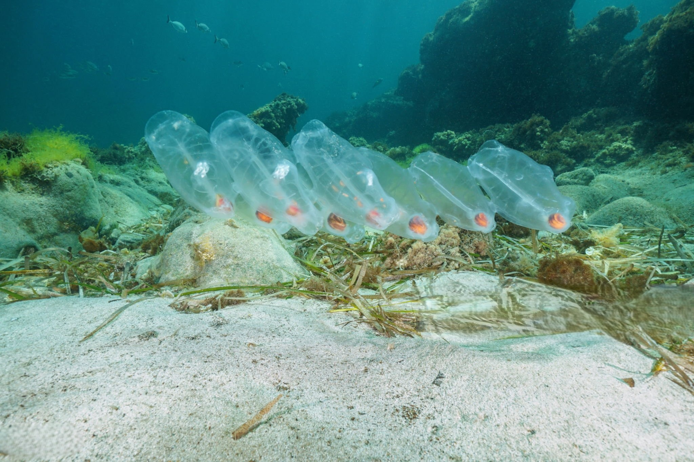